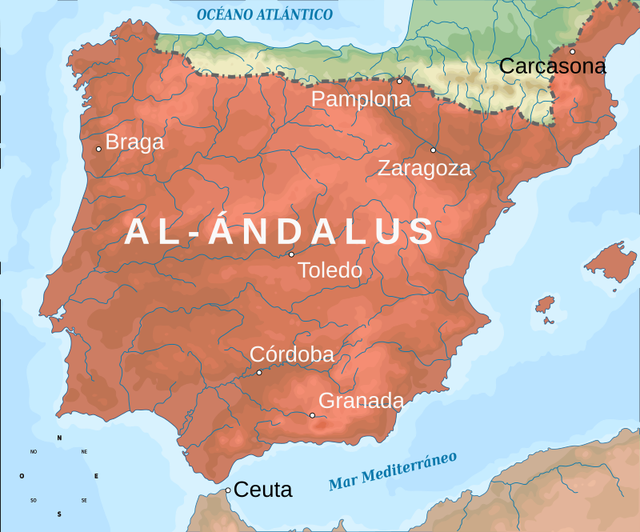

Al Andalus es el nombre que en la Edad Media dieron los musulmanes a la península ibérica.Algunos autores restringen el término al territorio peninsular e inicialmente de la Septimania bajo poder musulmán entre los años 711 y 1492.Para los autores árabes medievales,el término de al-Ándalus designa la totalidad de las zonas conquistadas por tropas musulmanas en territorios actualmente pertenecientes a España,Portugal,Francia,Andorra y el territorio británico de ultramar de Gibraltar.
Al Andalus en su maxima expresion

Tras la conquista musulmana de la península ibérica, al-Ándalus se integró inicialmente en la provincia norteafricana del Califato omeya. En el año 756 se convirtió en el Emirato de Córdoba y posteriormente en el año 929 en el Califato de Córdoba, independiente del califato abasí. Con la disolución del Califato de Córdoba en 1031, el territorio se dividió en los primeros reinos de taifas, periodo al que sucedió la etapa de los almorávides, los segundos reinos de taifas, la etapa de los almohades y los terceros reinos de taifas. Con el avance de la Reconquista iniciada por los cristianos de las montañas del norte peninsular, el nombre de al-Ándalus se fue adecuando al menguante territorio bajo dominación musulmana, cuyas fronteras fueron progresivamente empujadas hacia el sur, hasta la toma de Granada por los Reyes Católicos en 1492, que puso fin al poder islámico en la península ibérica, aunque la mayor parte de la población musulmana quedó en un principio en la península, unos convirtiéndose al catolicismo y otros, con creencias más arraigadas, marcharon a las cumbres de Sierra Nevada (véase La Alpujarra) hasta su definitiva expulsión.